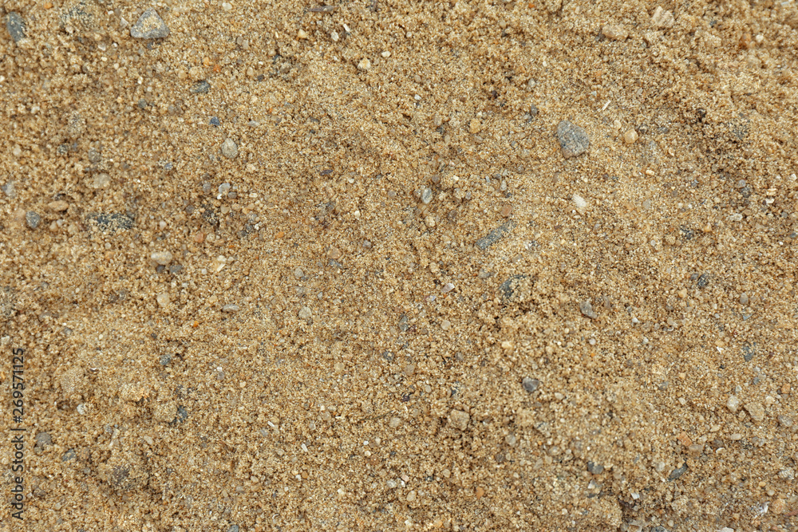
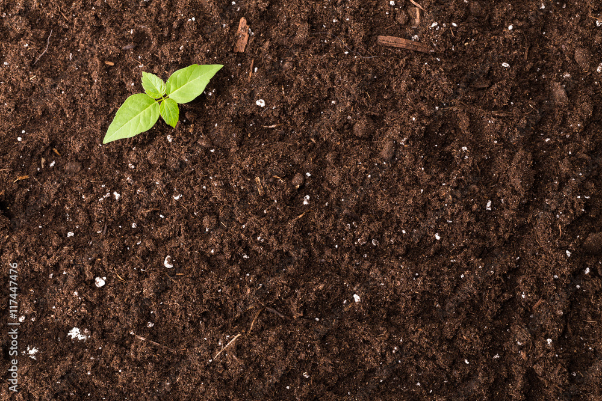
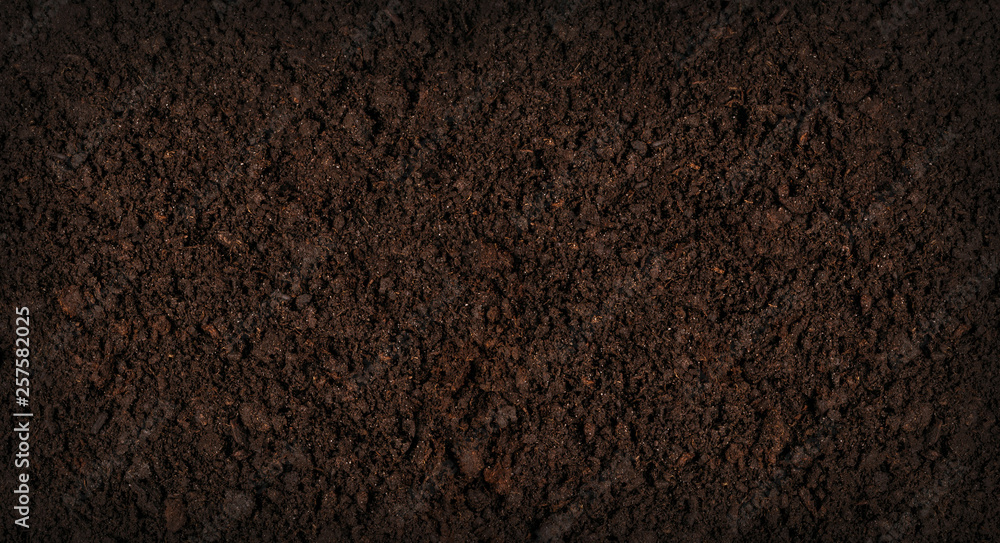

Select your soil type:(click on image to select)
Sandy

- light, warm, dry and tends to be acidic and low in nutrients
- often known as light soils due to their high proportion of sand and little clay
- quick water drainage and are easy to work with
- Soils high in sand are light gray to white
- The pH range of sandy soil is 5.0-5.5
Silty

- Silty soil is slippery when wet, not grainy or rocky
- It's easily transportable by water and can form crust when dry
- It has adequate drainage.
- Vegetables and fruit crops do well in silty soils
- The pH range of silty soil is 6.5-8.0
Clay

- Clay soils feel very sticky and rolls like plasticine when wet.
- They can hold more total water than most other soil types
- They swell when wetted and shrink when dried.
- Clay soil is Brown to yellowish brown
- The pH range of clay soil is 8.5-10.0
Loamy

- The Loamy soils are mouldable but not sticky.
- It has good water retention and filtration capacity.
- It has the necessary nutrients for crops
- It is brown or dark brown in color.
- The pH range of loamy soil is 9.0-11.0